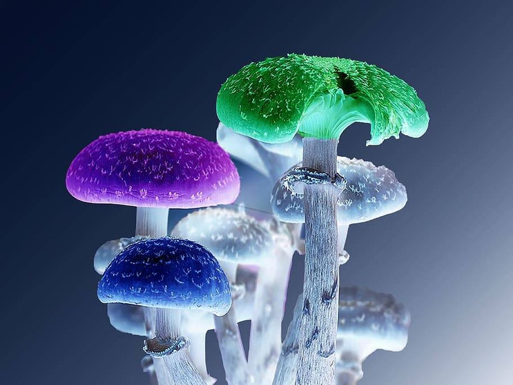
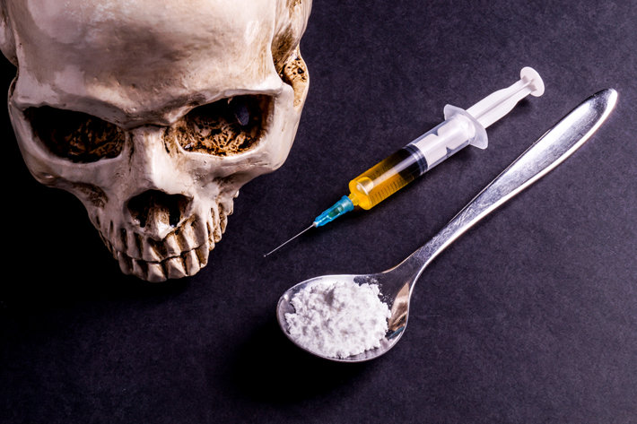
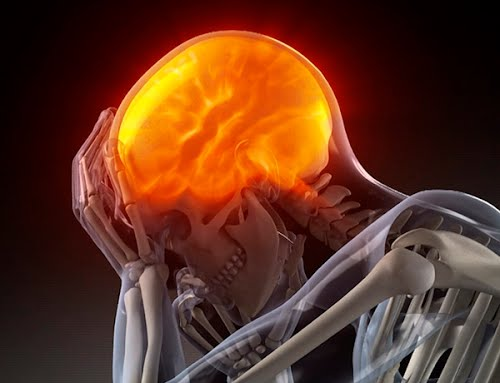

Las drogas son sustancias que, cuando se introducen en el organismo, actúan sobre el sistema nervioso central. Esto provoca cambios que pueden afectar a la conducta, el estado de ánimo o la percepción. Las drogas pueden producir sensaciones intensas de placer. A esta euforia inicial le siguen otros efectos que varían según la droga que se consuma. Por ejemplo, con estimulantes como la cocaína, después de la euforia siguen sensaciones de poder, autoconfianza y más energía.
TIPOS DE DROGAS
ALCOHOL
El alcohol es una droga depresora del Sistema Nervioso Central que inhibe progresivamente las funciones cerebrales. Afecta a la capacidad de autocontrol, produciendo inicialmente euforia y desinhibición, por lo que puede confundirse con un estimulante. El principal componente de las bebidas alcohólicas es el etanol o alcohol etílico, que tiene diferente concentración dependiendo de su proceso de elaboración.
AYAHUASCA
Esta sustancia psicotrópica de la familia de las triptaminas, también conocida como la molécula de Dios, es la responsable de las visiones y las alucinaciones. Se consume en forma de infusión pastosa, casi siempre en ritos colectivos.
CANNABIS (MARIHUANA)
La marihuana, también conocida como cannabis, hierba, mota o droga, se refiere a las flores, las hojas, los tallos y las semillas secas de la planta de cannabis. La planta de cannabis contiene más de 100 compuestos (o canabinoides).
Estos compuestos incluyen el tetrahidrocanabinol (THC), que altera la mente, y el canabidiol (CBD), que no altera la mente, lo cual significa que no causa “euforia” (“high”).
DEPRESORES
Los depresores del SNC son fármacos que incluyen sedantes, tranquilizantes y medicamentos hipnóticos.
Quizás la primera sustancia depresora del Sistema Nervioso Central (SNC), que se utilizó (además del alcohol) fue el gas óxido nitroso (gas de la risa). Este gas, produce efectos característicos de una corta intoxicación (como una borrachera) y fue utilizado por dentistas y cirujanos (que hasta entonces carecían de anestésicos). Luego se usó el éter, también como anestésico general.
COCAINA
La cocaína es un polvo blanco. Se puede inhalar por la nariz o mezclarse con agua e inyectarse con una aguja. La cocaína también se puede convertir en pequeñas rocas blancas, llamada crack. El crack se fuma en una pipa de vidrio pequeña.
La cocaína acelera todo su cuerpo. Usted puede sentirse lleno de energía, feliz y emocionado. Pero luego su estado de ánimo puede cambiar. Usted puede sentirse enojado, nervioso y temeroso de que alguien está tratando de hacerle daño. Usted puede hacer cosas que no tienen sentido. Después de acabarse la sensación de excitación tras consumir cocaína, se puede "estrellar" y sentirse cansado y triste por días. También causa un fuerte deseo de tomar la droga de nuevo para tratar de sentirse mejor.
ALUCINOGENOS
Los alucinógenos son un grupo diverso de drogas que alteran la precepción, los pensamientos y los sentimientos. También causan alucinaciones, o sensaciones y visiones que parecen reales pero que no lo son.

HEROINA
La heroína es una droga opioide producida a partir de la morfina, una sustancia natural que se extrae de la bellota de la amapola, también conocida como "adormidera asiática". La heroína suele presentarse en forma de polvo blanco o marrón, o como una sustancia negra y pegajosa conocida como "alquitrán negro".

EFECTOS INMEDIATOS
Procesos en nuestro organismo, y produce los siguientes efectos:
Estado de excitación motora y aumento del nivel de actividad de la persona.
Cambios emocionales variados que pueden llegar a provocar crisis de ansiedad u otras alteraciones.
Aumento inicial de la capacidad de atención y de la concentración, que permiten un aparente mayor rendimiento intelectual, aunque este efecto es pasajero.
Aumento de las frecuencias cardiaca y respiratoria así como de la tensión arterial, lo que favorece la aparición de enfermedades cardiacas y respiratorias.

EFECTOS A LARGO PLAZO
Moderan el funcionamiento del sistema nervioso central. Aumentan el riesgo de sufrir trastornos físicos importantes (hepáticos, pulmonares, neurológicos, circulatorios, etc.) y mentales (alucinaciones, comportamientos agresivos, delirios, etc.). Generan una rápida adicción, incluso la muerte.